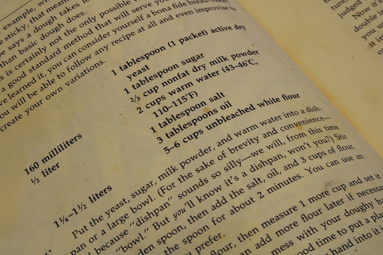

An image (img) element requires the source (src) attribute in order to display anything. The src attribute provides instructions to the computer for where to find the image you want to load.
Assuming your images are in an "images" folder adjacent to the HTML file you're adding the images to, the value you specify to src will look something like this: src="images/image-file-name.jpg" This tells the img element to first look inside of a nearby "images" folder, and then to load up the specified file name inside of it.
Including the alternate (alt) attribute, which provides an alternate textual description of the image, is also good practice.
Image elements are inline elements,  meaning they will appear "in line" with any text before and after it, unless you alter their display properties or use line breaks.
Note that image element code can be written on one line, but you can also be split their attributes across multiple lines if the code is too long on one line, like below.
By default, an image will display at whatever its natural size is, which is usually larger than you want, as is the case with the image below.
To address this issue, we can either use CSS to resize an image (the preferred approach, once you've learned CSS) or we can use the width or height attributes, as was used on the image below.
The width and height attributes accept a number value, which represents the width or height in pixels.
WARNING! Be careful not to use both width AND height at the same time, as this will likely distort the image rather than resize it, as in the example below.